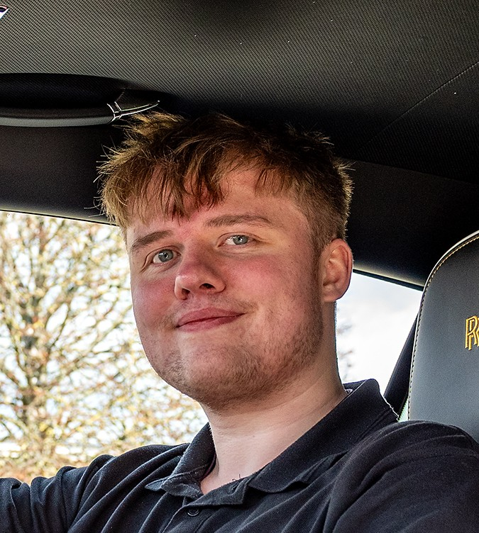

McDonald’s
Built discipline, teamwork, and consistency in a fast-paced environment.
Final-year Computer Science student.
Digital Innovation Intern at Rolls-Royce Motor Cars.
I build end-to-end systems and I care about quality. My work spans software engineering, data pipelines, analytics, automation, and system design. I aim to understand a system at every level, then improve it.

Reliable, organised, and straightforward to work with.
I prioritise reliability, consistency, and high standards. I value clear communication and strong teamwork.
I am a Computer Science undergraduate on track for First-Class Honours. During my placement year, I have delivered production-facing systems, analytics, and automation in an enterprise environment.
I am interested in systems engineering and roles that combine breadth with depth, including software, data, platform, and systems work.
“Computer science is no more about computers than astronomy is about telescopes.”
Progression and focus over time.
Built discipline, teamwork, and consistency in a fast-paced environment.
Strengthened fundamentals across software, data, and systems. Focused on building from first principles.
Digital Innovation Intern delivering enterprise applications, analytics, data pipelines, and automation.
Roles across software, platform, data, or systems engineering, ideally with end-to-end ownership.
Selected outcomes from my placement year. Details are kept appropriately high-level.
Jun 2025 to present
Tools used include Python, C#, SQL, Power BI, DAX, Oracle APEX, Power Apps, and SharePoint.
Projects built from first principles. No filler, only work I can explain deeply.
Dissertation project, CLI, custom query language
Built a database engine in C# with a CLI interface and a human-readable query language. The key challenge was designing and implementing the parsing layer so queries are expressive, deterministic, and maintainable.
12-bit data, 2 KB RAM, branching, compare, RGB output
Built a CPU using hand-placed wiring and logic components. Implemented a practical instruction set and demonstrated real programs, including Fibonacci and a basic graphics output.
A set of standalone tools built to solve real problems. Some work is not publicly documented due to confidentiality, but demonstrations are available on request.
Skills backed by applied work, not a keyword list.
Interests that keep me consistent outside engineering.
Karate, gym, and running. Consistency and long-term progress.
Programming and Rubik’s cubes. Pattern recognition and iteration.
Guitar. A different kind of discipline and feedback loop.
Driving and gaming. Focus, coordination, and decompression.
Best contact methods are email and LinkedIn. Use the form if preferred.